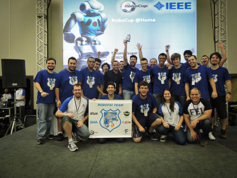

Team Members
Faculty:
PhD Students:
- Andrey A. Masiero, working on Human-Robot Interaction focus on Social Behavior and Service Robots.
- Claudio O. Vilão Jr, working on vision and localization.
- Danilo Hernani Perico, working on using qualitative spatial reasoning to improve communication and decision among the robots.
- Isaac Jesus da Silva, working on using Reinforcement learning for Robot Stabilization.
- Thiago Pedro Donadon Homem, working on trajectory planning.
MSc Students:
- Aislan Cesar de Almeida, working on robot localization.
Undergrad Students:
- Vinicius Nicassio Ferreira, developing a TeenSize humanoid robot.
- Feliphe G. Galiza, working on gait generation.
- Leonardo Contador, working on object recognition.
- Lucas Matos Vasconcelos, working on navigation planning.
- Marina Yukari, designing and building robot's arms and head.
Past Students:
- Douglas de Rizzo Meneghetti, worked on object recognition.
- Edson Oliveira Junior, designed and built robot arm support.
- Eduardo M. Nottolini, worked on the electronic board of the Robot.
- Gabriel Doretto, worked on speech recognition.
- Italo Fernandes, worked on speech recognition.
- Milton Perez Cortez Junior, designed and built the Milton robot, our first humanoid robot (the first version of Newton robot).
All RoboFEI team to celebrate @Home 3rd place, Humanoid 2nd place and SSL 1st place on LARC/CBR 2015 at Uberlândia, Minas Gerais, Brazil.
